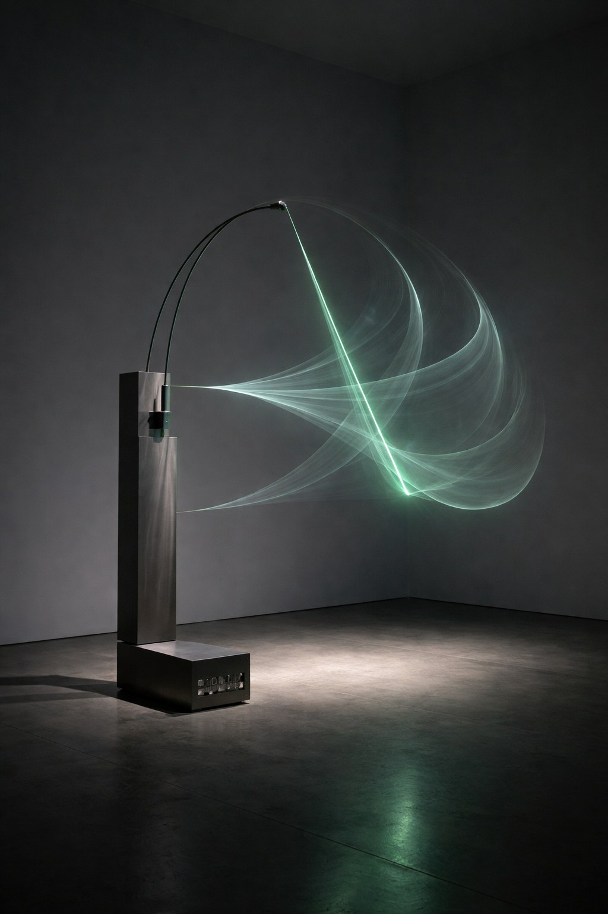
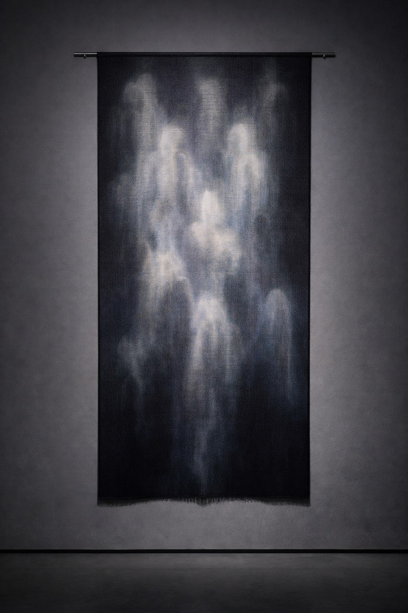
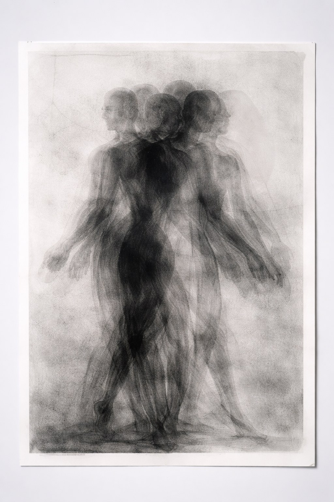
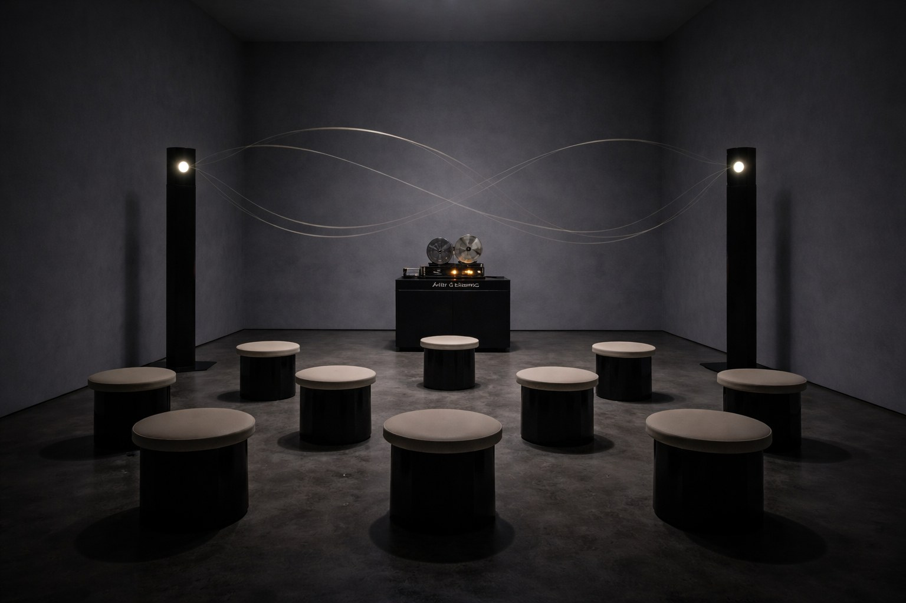

CONCEPT
10年の軌跡から、
“AFTER IMAGE”
（残像）へ。
光が去ったあとに浮かぶ像のように、創作の時差を見つめる展覧会。10年で出会った作家たちの新作・未公開作を中心に、記憶と物質が交わる瞬間を展示します。
ARTISTS & WORKS
参加アーティスト
当日は物販コーナーにて、限定アーティストプリント・10周年記念ポスター・アーカイブZINEを販売いたします。
01
折原 柚衣 / Yui Orihara
光学プリント／残像表現
《Afterglow #07》, 2025, ラムダプリント＋UVレジン, 100×140, 作家蔵
《Blind Spot》, 2024, ピグメントプリント, 80×120, 個人蔵（東京）

02
NORI（野里 直）
キネティック彫刻
《Echo Pendulum》, 2025, ステンレス・磁石・モーター, W120×D80×H210, GALLERY DOT 蔵

03
佐伯 凛
デジタル織物（テキスタイル×生成アルゴリズム）
《weave_ghost 3》, 2025, ジャカード織（シルク/和紙）, 180×90, 個人蔵

04
Hanna K.（韓・在ベルリン）
版画／モノタイプ
《Residual Bodies》, 2023, モノタイプ＋グラファイト, 70×100, 作家蔵

05
境 直斗
サウンド・インスタレーション
《After Silence》, 2025, 定在波スピーカー・テープループ, 可変
ルームB｜入場10名・15分入替（撮影不可）
© Artist / Courtesy of GALLERY DOT
GIFT
来場特典 — 10周年記念マグカップ
- LPから来店予約
- 予約番号・QRをメールで受取
- 当日、入口でQRスキャン（チェックイン）
- 物販横で引換QRを提示しマグを受取
- 対象は予約者本人（1名につき1点）。同伴は予約1件につき最大2名まで入場可
- 各日40個（色2種）。なくなり次第終了／色は選べない場合あり／転売禁止
日別 残数インジケーター
1/10 土
1/11 日
1/12 月
1/14 水
1/15 木
ACCESS
来場方法
〒150-0001 東京都渋谷区神宮前1-2-3 DOT BLDG 1F
東京メトロ「明治神宮前駅」・JR「原宿駅」のエレベーター設置出口より段差なしで来場可能。
- エントランス〜展示室まで段差なし／多目的トイレ1基／補助犬同伴可
- 車椅子・ベビーカーの貸出、個別介助は行っていません（ベビーカー預かりは数量限定）
- 暗所・点滅光の演出あり。光過敏の方は入場時にスタッフへご相談ください
SCHEDULE
トーク／
ライブパフォーマンス
来場予約とは別に、各トーク・ライブへの参加には個別予約が必要です（「予約不要」表記のものを除く）。
1/11日
要予約トーク
「AFTER IMAGE と、10年のキュレーション」
17:00–18:15｜佐伯奈央／水野圭太／久保田ミオ｜定員40
この回を予約する →
1/17土
要予約トーク
「記憶・物質・イメージの残り方」
18:00–19:00｜森本紗英／高橋凌／司会 佐伯奈央｜定員35
この回を予約する →
1/18日
要予約ライブ
「AFTER IMAGE / Light Trace」
18:30–19:10｜NOA ISHIKAWA／KEN OTOMO｜定員30
この回を予約する →
1/24土
予約推奨トーク
「若手作家が語る“AFTER IMAGE”」
16:00–17:00｜出展作家3名リレートーク・Q&A｜定員50
この回を予約する →
1/25日
予約不要ライブ
「Archive Body」
17:30–18:00｜牧村澪／映像 井上湊｜当日観覧可（混雑時は入場制限）
当日直接ご参加いただけます
来場予約は本ページの予約フォームからお申し込みください。「AFTER IMAGE / Light Trace」（1月18日開催）は時間帯別の入場制です。未就学児は保護者同伴でご来場ください。
HISTORY
ギャラリーの歩み
- 2016GALLERY DOT 開廊。「Dot Studies #01」シリーズ開始
- 2017若手作家支援プログラム開始（年間3名）
- 2018「New Vision Tokyo」企画 — Tokyo Art Directors Award 入選
- 2019海外フェア初出展（Art Busan / Discoveries）
- 2020オンライン・ビューイング開設（年間来場 2.8万UU）
- 2021キュレーション展「Shadow Index」（都美術館 連携企画）優秀企画賞
- 2022アーティスト・イン・レジデンス（新潟）開始／国内外5名招聘
- 2023写真×彫刻の二人展「Edge After Edge」開催、図録が写真協会ブックアワードのショートリストに選出
- 2024企業コレクション向けキュレーション5件（オフィス常設）
- 202610周年記念展 “AFTER IMAGE” 開催
FAQ
よくある質問
Q. 予約なしでも入れますか？混雑時は予約優先・入場制限があります。特典は予約来場者のみが対象です。
Q. 同伴者も特典はもらえますか？いいえ。特典は予約者本人のみです（同伴は予約1件につき最大2名）。
Q. 時間変更は可能ですか？前日18:00まで、予約変更フォームから変更できます。
Q. 再入場はできますか？当日中、受付でスタンプ提示により可能です。
Q. 子連れで行けますか？可能です（未就学児は手をつなぐなど安全配慮をお願いします）。
TERMS
規約・個人情報（要約）
- 特典は予約者本人1点／転売禁止／引換は当日限り／色は選べない場合あり
- 無断キャンセルが一定数を超える場合、以後の予約をお断りします
- 撮影：静止画のみ・フラッシュ不可・動画不可（撮影不可表示の作品は全撮影禁止）
- 個人情報は予約・運営・連絡に使用し、会期終了後90日で削除（法令に基づく場合を除く）
規約全文（PDF）｜個人情報の取扱い全文（PDF）